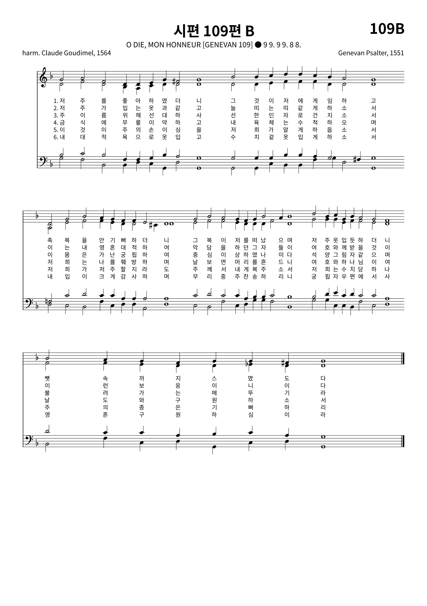

Psalm 109B
O DIE, MON HONNEUR [GENEVAN 109] · 9 9. 9 9. 8 8.
English title: O Be Not Silent, Heed and Hear Me
Tune: Genevan Psalter, 1551 · Harmony: Claude Goudimel, 1564 · Lyrics: Korean adaptation of Psalm 109 from the Korean Revised Version (AI draft adaptation · not yet theologically reviewed) · 6 stanzas
Psalm 109 is divided into 2 tunes: A B · This tune contains stanzas 7–12 of the Psalm 109 lyrics.
Score PDF MusicXML (for printing) MusicXML (for accompaniment, with prelude and repeats) Read Psalm 109 (Korean Revised Version)
Score
← Psalm 109A ListAccompaniment (in preparation)Psalm 110 →
Lyrics (Korean)
Stanza 1
저주를 좋아하였더니
그것이 저에게 임하고
축복을 안 기뻐하더니
그 복이 저를 떠났으며
저주 옷 입듯 하더니
뼛속까지 스몄도다
저주를 좋아하였더니
그것이 저에게 임하고
축복을 안 기뻐하더니
그 복이 저를 떠났으며
저주 옷 입듯 하더니
뼛속까지 스몄도다
Stanza 2
저주가 입는 옷과 같고
늘 띠는 띠 같게 하소서
이는 내 영혼 대적하여
악담을 하던 그 자들이
여호와께 받을 것이
이런 보응이니이다
저주가 입는 옷과 같고
늘 띠는 띠 같게 하소서
이는 내 영혼 대적하여
악담을 하던 그 자들이
여호와께 받을 것이
이런 보응이니이다
Stanza 3
주 이름 위해 선대하사
선한 인자로 건지소서
이 몸은 가난 궁핍하여
중심이 상하였나이다
석양 그림자 같으며
불려가는 메뚜기라
주 이름 위해 선대하사
선한 인자로 건지소서
이 몸은 가난 궁핍하여
중심이 상하였나이다
석양 그림자 같으며
불려가는 메뚜기라
Stanza 4
금식에 무릎이 약하고
내 육체는 수척하오며
저희는 나를 훼방하며
날 보면 머리를 흔드니
여호와 하나님이여
날 도와 구원하소서
금식에 무릎이 약하고
내 육체는 수척하오며
저희는 나를 훼방하며
날 보면 머리를 흔드니
여호와 하나님이여
날 도와 구원하소서
Stanza 5
이것이 주의 손이심을
저희가 알게 하옵소서
저희가 저주할지라도
주께서 내게 복 주소서
저희는 수치 당하나
주의 종은 기뻐하리
이것이 주의 손이심을
저희가 알게 하옵소서
저희가 저주할지라도
주께서 내게 복 주소서
저희는 수치 당하나
주의 종은 기뻐하리
Stanza 6
내 대적 욕으로 옷 입고
수치 겉옷 입게 하소서
내 입이 크게 감사하며
무리 중 주 찬송하리니
궁핍자 우편에 서사
영혼 구원하심이라
내 대적 욕으로 옷 입고
수치 겉옷 입게 하소서
내 입이 크게 감사하며
무리 중 주 찬송하리니
궁핍자 우편에 서사
영혼 구원하심이라